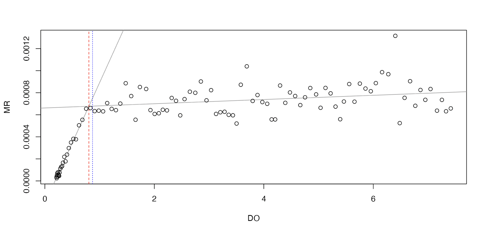
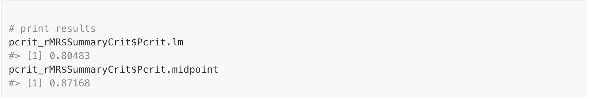
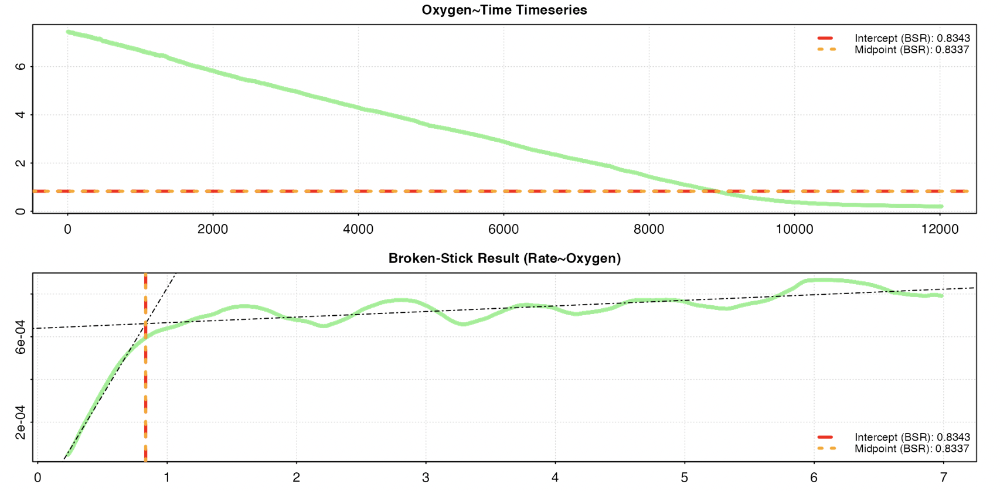
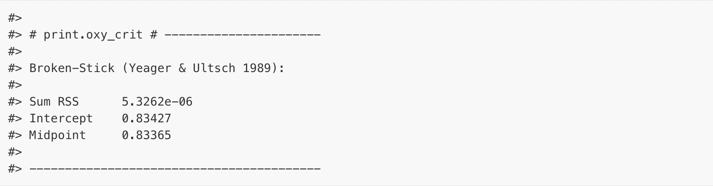

oxy_crit: Comparisons with other packages
Source:vignettes/archive/oxy_crit_comp.Rmd
oxy_crit_comp.RmdNote
This page has been archived and will not be updated. This is
because it was submitted as part of the publication of
respR in Methods in Ecology and Evolution, and has been
retained unchanged for reference. Any results and code outputs shown are
from respR v1.1 code. Subsequent updates to
respR should produce the same or very similar results.
Comparisons to other implementations of PCrit analyses
The segmented method included in the
oxy_crit() function in respR is simply a
wrapper for the segmented
package by Muggeo (2008). Thus, comparing respR results to
those from this package would be moot. See the documentation of that
package, plus publications by Muggeo for discussion of this method.
The other methods we implement at present are the two ‘broken-stick
regression’ (BSR) metrics of Yeager and Ultsch (1989). To our knowledge,
rMR is the only other R package that has this
functionality. This is example code taken from the documentation for
rMR calculating
for the included fishMR dataset, which we compare with the
results from respR using the same data.
## rMR PCrit Analysis
# load data
data(fishMR)
# format time
fishMR$std.time <- as.POSIXct(fishMR$Date.time,
format = "%d/%m/%Y %I:%M:%S %p")
# calc pcrit
pcrit_rMR <-get.pcrit(data = fishMR,
DO.var.name = "DO.mgL",
Pcrit.below = 2,
time.var = "std.time",
time.interval = 120,
start.time = "2015-07-03 04:45:00",
stop.time = "2015-07-03 08:05:00")
# print results
pcrit_rMR$SummaryCrit$Pcrit.lm
pcrit_rMR$SummaryCrit$Pcrit.midpoint

## respR PCrit Analysis
# extract time and oxygen column, and format to numeric time starting at zero
fishMR_respR <- fishMR[46000:58000, c(2,6)]
fishMR_respR[,1] <- fishMR_respR[,1] - fishMR_respR[1,1]
# perform respR pcrit analysis
oxy_crit(fishMR_respR)

Note that the rMR results (0.80 and 0.87) are different
to those from respR (0.83 and 0.83). This is likely due to
an improved implementation of the BMR method in respR. The
respR analysis uses rolling (i.e. overlapping) regressions,
while the rMR implementation uses interval
(i.e. non-overlapping) regressions to calculate rates. This means that
in the rMR implementation the width of regressions has a
large effect on the ultimate result, which the user has to balance. A
wide width means better estimates of rate, but fewer in total. A narrow
width means less accurate estimates of rate, but a greater number of
estimates upon which to perform the breakpoint analysis. This is much
less of an issue in respR; because the regressions overlap,
the width has much less of an effect upon the total number of estimates
of rate.
However, note that the user still needs to carefully consider the width (the default is 0.1 of the total data length); too narrow and it will increase noise amongst the rate estimates, too wide and it will cause breakpoints to be less pronounced.
The rolling vs. interval regression methods in the rMR
and respR implementations of BSR also make it difficult to
directly compare their outputs using the same inputs. However, the fact
that the two BSR respR results (0.84 and 0.84) are
identical to each other, and also extremely close to the result from the
segmented method (0.85) (which uses a completely different
technique to identify breakpoints), suggests that the respR
implementation is reliable.